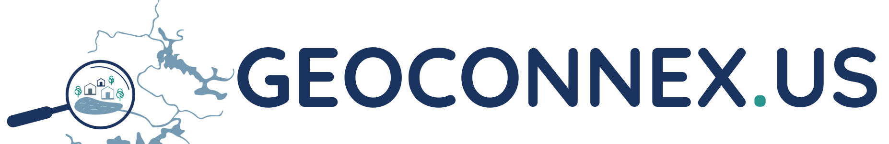

<script type="application/ld+json">
{
"@context": {
"@vocab": "https://schema.org/",
"ex": "https://example.com/schema/",
"locType": "https://www.opengis.net/def/schema/hy_features/hyf/HY_HydroLocationType"
},
"@id": "https://example.com/well/1234",
"@type": "schema:Place",
"name": "Well 1234",
"description": "Well at 1234 Place St., USA",
"locType": "well",
"subjectOf": {
"@id": "https://datasystem.org/dataset1",
"@type": "schema:Dataset",
"name": "Well Locations Dataset",
"ex:recordCount": 500
}
}
<script> 
1 Introduction
The Geoconnex project is about providing technical infrastructure and guidance to create an open, community-contribution model for a knowledge graph linking hydrologic features in the United States, published in accordance with Spatial Data on the Web best practices as an implementation of Internet of Water principles. The development of geoconnex.us takes place on GitHub. See here for the system of repositories.
Geoconnex will allow data users to answer questions like: “What datasets are available about the portions of Colorado River upstream of Hoover Dam within Nevada and Utah regarding variables discharge and total suspended solids with measurements taken at least daily with coverage between 2002 and 2007?” and be returned metadata for all relevant datasets from all participating organizations, including federal, state, private, and NGO organizations.
See https://geoconnex.us/demo for a mockup of data discovery and access workflows that https://geoconnex.us aspires to enable.
Geoconnex rests on data providers publishing metadata to the system. Thus, Geoconnex involves the publication of Web Resources, which include structured, embedded metaadata that describe water datasets and the real-world environmental features (eg rivers, wells, dams, catchments) or the cataloging features (eg government jurisdiction areas, statiscal summary reporting areas) that they are relevant to. This document provides guidance, including general principles as well as specific templates, for data providers for how to structure this metadata using the JSON-LD format.
Related materials, presentations, and publications
National Hydrography Infrastructure and Geoconnex
New Mexico Water Data Initiative including geoconnex.us
Roundtable presentation including geoconnex.us
Second Environmental Linked Features Interoperability Experiment
ESIP Sessions on Structured Data in the Web slides
1.1 Basic Information Model
The model used to organize information in the Geoconnex system is shown in Figure 1.

Data providers refer to specific systems that publish water-related datasets on the web. Many times a provider will simply be the data dissemination arm of an organization, such as the Reclamation Information Sharing Environment (RISE) of the US Bureau of Reclamation. Some organizations may have multiple data providers, such as US Geological Survey, which administers the National Water Information System as well as the National Groundwater Monitoring Network, among others. Some data providers are aggregators of other organizations’ data, such as the Hydrologic Information System of CUAHSI.
Datasets refer to specific collections of data that are published by data providers. In the context of Geoconnex, a single dataset generally refers to one that is collected from, or summarizable to, a specific spatial location on earth, as part of a specific activity. For example, a dataset would be the stage, discharge and water quality sensor data coming from a single stream gage, but not the collection of all stream gage readings from all stream gages operated by a given organization. A dataset could also be the time-series of a statistical summary of water use at the county level.
Locations are specific locations on earth that datasets are collected from or about, such as stream gages, groundwater wells, and dams. In the case of data that is reported at a summary unit such as a state, county, or hydrologic unit code (HUC), these can also be considered Locations. Conceptually, multiple datasets from multiple providers can be about the same Location, as might occur when a USGS streamgage and a state DEQ water quality sampling site are both located at a specific bridge.
Hydrologic features are elements of the water system that are related to locations. For example, a point may be on a river, which is within a watershed, and whose flow influences an aquifer. Each of these are distinct, identifiable features which many Locations are hydrologically related to, and which a user of a given dataset might also want to use.
Cataloging features are areas on earth that commonly group datasets. They are a superset of summary features such as HUCs, counties and states. For example, a state-level dataset summarizing average annual surface water availability would not have states as a cataloging feature. However, streamgage is within a state, county, HUC, congressional district, etc and may be tagged with these features in metadata, and thus be filtered alongside other streamgages within the same state.
This Geoconnex guidance concerns how to explicitly publish metadata that describes Datasets how they are related to each of the other elements of the information model.
1.2 JSON-LD Primer
JSON-LD is a version of JSON, the popular data exchange format used by web APIs, to express linked data. Linked Data is an approach to data publication that allows data from various sources to be easily integrated. JSON-LD accomplishes this by mapping terms from a source data system to a machine-readable definition of that term available on the web, allowing different attribute names from different data sources to be consistently interpreted together. Commonly, JSON-LD is embedded within websites, allowing search engines and applications to parse the information available from web addresses (URLs). For an in-depth exploration and multimedia resources, refer to the JSON-LD official site and its learning section. JSON-LD documents should be embedded in the HTML of websites using script headers. A brief overview of the JSON-LD format follows below.
Below is an example JSON-LD document as embedded in a <script> division within a <head> or <body> section of an HTML page, with an explanation of its major elements.
<script type="application/ld+json">, <script> These are immutable HTML elements that tell machines to interpret everything between them as JSON-LD.
@context The @context keyword in JSON-LD sets the stage for interpreting the data by mapping terms to IRIs (Internationalized Resource Identifiers). By doing so, properties and values are clearly defined and identified. Our updated example has two contexts:
@vocab: Sets the default document vocabulary tohttps://schema.org/, which is a standard vocabulary for web-based structured data. This means that in general, attributes in the document will be assumed to havehttps://schema.org/as a prefix, so JSON-LD parsers will mapnameto https://schema.org/nameex: This is a custom context prefix representinghttps://example.com/schema/, signifying specific extensions or custom data definitions specific to our website. The prefix can be used on other attributes so that JSON-LD parsers do the appropriate mapping. Thus,ex:namewill be parsed ashttps://example.com/schema/recordCount.locType: This is a custom direct attribute mapping, specifying that this attribute exactly matches to the concept identified by this HTTP identifier https://www.opengis.net/def/schema/hy_features/hyf/HY_HydroLocationType. Using this direct mapping approach allows data publishers to map their arbitrary terminology to any publicly accessibly and well-identified standard term.
@id The @id keyword furnishes a uniform resource identifier (URI) for subjects in the JSON-LD document, enabling the subjects to be interconnected with data elsewhere. In this example:
- Well 1234 has the identifier
https://example.com/well/1234. - The dataset that it is about, “Well Locations Dataset”, has its unique identifier as
https://datasystem.org/dataset1.
@type The @type keyword stipulates the type or nature of the subject or node in the JSON-LD. It aids in discerning the entity being depicted. In the given context:
- Well 1234 is specified as a “Place” from the schema.org vocabulary (
schema:Place). - Well Locations Dataset’s type is a “Dataset” from the schema.org vocabulary (
schema:Dataset).
Nodes Nodes represent entities in JSON-LD, with each entity having properties associated with it. In the example:
- The main node is Well 1234, possessing properties like “name”, “description”, “locType”, and “subjectOf”.
- subjectOf property itself is a node representing a dataset that is about Well 1234. Apart from the “name” property, the dataset now also has a property called “ex:recordCount” (using the
ex:prefix from@context) indicating the number of rows in the dataset. This extension showcases the flexibility and strength of JSON-LD, where you can seamlessly integrate standard vocabulary with custom definitions, ensuring rich and well-structured interconnected data representations. Below, you can see how JSON-LD tools would parse and standardize the JSON-LD in the example.
1.3 Geoconnex JSON-LD elements
A Geoconnex JSON-LD document should be embedded in a human-readable website that is about either a Location or a Dataset. Documents about Locations should ideally include references to relevant Hydrologic Features, Cataloging Features, and Datasets. Documents about Datasets must include references to relevant Reference Monitoring Locations, Hydrologic Features and/or Cataloging Features.
1.3.1 Context
Geoconnex JSON-LD documents can have varying contexts. However, there are several vocabularies other than schema.org that mqy be useful, depending on the type of location and dataset being described and the level of specificity for which metadata is produced by the data provider. The example context below can serve as general-purpose starting point, although simpler contexts may be sufficient for many documents:
"@context": {
"@vocab": "https://schema.org/",
"rdfs": "http://www.w3.org/2000/01/rdf-schema#",
"dc": "http://purl.org/dc/elements/1.1/",
"qudt-units": "http://qudt.org/vocab/unit/",
"qudt-quantkinds": "http://qudt.org/vocab/quantitykind/",
"gsp": "http://www.opengis.net/ont/geosparql#",
"locType": "http://vocabulary.odm2.org/sitetype",
"odm2var":"http://vocabulary.odm2.org/variablename/",
"odm2varType": "http://vocabulary.odm2.org/variabletype/",
"hyf": "https://www.opengis.net/def/schema/hy_features/hyf/",
"skos": "https://www.opengis.net/def/schema/hy_features/hyf/HY_HydroLocationType",
"ssn": "http://www.w3.org/ns/ssn/",
"ssn-system": "http://www.w3.org/ns/ssn/systems/"
}rdfsis a general vocabulary for basic relationshipsdcis the Dublin Core vocabulary for general information metadata attributesqudt-unitsprovides standard identifiers for units (e.g. cubic feet per second)qudt-quantkindsprovides ids for general phenomena (e.g. Volume flow rate) which may be measured in various unitsgspprovides ids for spatial relationships (e.g. intersects)odm2varis a supplement toqudt-quantkinds, and includes ids for many variables relevant to water science and management (e.g. turbidity)odm2varTypeis a supplement toodm2varthat includes ids for large groupings of variables (e.g. Water Quality)hyfprovides ids for surface water hydrology concepts (e.g. streams)skosprovides general properties for relating different concepts (e.g. broader, narrower, exact Match)ssnandssn-systemprovide ids for aspects of observations and measurement (e.g. measurement methods)
1.3.2 Reference Features
Embedding links to URIs of Reference Features are the best way to ensure that your data can be related to other data providers’ data. URIs for reference features are available from the Geoconnex reference feature server. Reference features can be one of three types:
- Monitoring Locations which are common locations that many organizations might have data about such as a streamgage station e.g. https://geoconnex.us/ref/gages/1143822
- Hydrologic Features which are common specific features of the hydrologic landscape that many organizations have data about. These could include confluence points, aquifers, stream segments and river mainstems and named tributaries, e.g. https://geoconnex.us/ref/mainstems/29559.
- Cataloging Features which are larger area units that are commonly used to group and filter data, such as HUCs1, states2, counties3, PLSS grids, public agency operating districts, etc.
2 Building Geoconnex Web Resources, Step-by-Step
This section provides step-by-step guidance to build Geoconnex Web Resources, which should be an HTML webpage with a unique URL within which is embedded an JSON-LD document (see Section 1.2).
2.1 Location or Dataset oriented?
Depending on what kind of resource i.e. (location or dataset) and the level of metadata you have available to publish, you can use different elements of the @context or use Reference Features in various ways. Below we will work through creating a JSON-LD document depending on your situation.
There are two basic patterns to think about:
Location-orientedwebpages that include a catalog of parameters and periods of record for which there is data about the location. This pattern may be suitable where data can be accessed separately for each location and possibly for each parameter for each location. This is typical of streamgages, monitoring wells, water diversions, reservoirs, regulated effluent discharge locations, etc. where there is an ongoing monitoring or modeling program that includes data collection or generation for multiple parameters. The Monitor My Watershed Site pages published by the Stroud Center are an example of this pattern. At this page, one finds a variety of information about a specific location, such as that location’s identifier and name and a map of where it is. In addition there is information about which continuous sensor and field water quality sample data are available about the location, and links to download these data.Dataset-orientedwebpages that tag which locations are relevant to the dataset described at a given page. This pattern may be suitable for static datasets where data was collected or modeled for a consistent set of parameters for a pre-specified research question and time period across one or more locations, and where it would not make sense to publish separate metadata for the parts of the dataset that are relevant to each individual feature and parameter. This is typical of datasets created for, and published in association withm scientific and regulatory studies. This dataset record published on CUAHSI’s Hydroshare platform is an example, where there is a “Related Geospatial Features” section that explicitly identifies several features that the dataset has data about.
In some cases, it is possible to set up a web architecture that implements both patterns. For example, the Wyoming State Engineer’s Office Web Portal conceptualizes a time series for a specific parameter at a specific location as a dataset. Thus, webpages exist for both Locations and Datasets, and they link to each other where relevant. In this case, it is only necessary to implement Geoconnex embedded JSON-LD at either the Location or Dataset level, although both could be done as well.
Having chosen one of the patterns, proceed to location-oriented or dataset-oriented guidance to start building a JSON-LD document.
2.1.1 Location-oriented
The purpose of the location-oriented page is to give enough information about the location and the data available about that location that a water data user would be able to quickly determine whether and how to download the data after reading. We will use the USGS Monitoring Location 08282300 as an example for the type of content to put in location-oriented Geoconnex landing page web resources and how to map that content to embedded JSON-LD documents.
Note
Scroll up and down to view elements of the example landing page
This location-oriented web resource includes this type of information
“I am the same thing as Geoconnex Reference Gage 1018463”5
“My unique USGS ID is
08282300”“My name is
Rio Brazos at Fishtail Road NR Tierra Amarilla, NM”“Data about me is provided by the
USGS Water Data for the Nation”“I am a
hydrometric station6”“My lat/long is
36.738 -106.471”“I am on the Rio Brazos”7
“There is data about me for the parameter
Dischargeand between June 6, 2014 to the present at a 15 minute time resolution. This data is generated fromin-situ observation, in particular using USGS discharge measurement methods. You can download it here using the USGS Instantaneous Values REST Web Service in the RDB format”. You can also download it here using the SensorThings API standard inJSONorCSVformats.”8“There is data about me for the parameter
Gage Heightbetween June 6, 2014 to the present at a 15 minute time resolution. This data is generated fromin-situ observation, in particular using USGS stage measurement methods. You can download it here from the USGS Instantaneous Values REST Web Service in the RDB format”. You can also download it here using the SensorThings API standard inJSONorCSVformats.”
2.1.1.1 JSON-LD
Here we will build the equivalent JSON-LD content step-by-step. The steps are:
- Identifiers and provenance
- Spatial geometry and hydrologic references
2.1.1.1.1 Identifiers and provenance
A first group of information helps identify the location and its provenance.
“I am a
hydrometric station10”“I am the same thing as Geoconnex Reference Gage 1018463”11
“My unique USGS ID is
08282300”“My name is
Rio Brazos at Fishtail Road NR Tierra Amarilla, NM”“Data about me is provided by the
USGS Water Data for the Nation”
{
"@context": {
"@vocab":"https://schema.org/",
"hyf": "https://www.opengis.net/def/schema/hy_features/hyf/",
"locType": "http://vocabulary.odm2.org/sitetype/"
},
"@id": "https://geoconnex.us/usgs/monitoring-location/08282300",
"@type": [
"hyf:HY_HydrometricFeature",
"hyf:HY_HydroLocation",
"locType:stream"
],
"hyf:HydroLocationType": "hydrometric station",
"sameAs": {"@id":"https://geoconnex.us/ref/gages/1018463"},
"identifier": {
"@type": "PropertyValue",
"propertyID": "USGS site number",
"value": "08282300"
},
"name": "Rio Brazos at Fishtail Road NR Tierra Amarilla, NM",
"description": "Stream/River Site",
"provider": {
"url": "https://waterdata.usgs.gov",
"@type": "GovernmentOrganization",
"name": "U.S. Geological Survey Water Data for the Nation"
}
}Here we construct the JSON-LD document by adding a context which includes the https://schema.org/ vocabulary, as well as the https://www.opengis.net/def/schema/hy_features/hyf/ vocabulary which defines specific concepts in surface hydrology, and the ODM2 sitetype vocabulary which defines types of water data collection locations.
The
@idelement of https://geoconnex.us/ref/monitoring-location/08282300 in this case is a persistent geoconnex URI. See here for how to create these. It is optional if the “same thing” geoconnex URI in the next bullet is provided, in which case this could just be the URL of the web resource for the location, or omitted.The
@typeelement here specifies that https://geoconnex.us/ref/monitoring-location/08282300 is a Place (i.e. a generic place on earth), a Hydrometric Feature (i.e. a data collection station) and a HydroLocation (i.e. a specific location that could in principle define a catchment). ThelocTypefurther specifies the type of location using the ODM2 sitetype vocabulary http://vocabulary.odm2.org/sitetype/, which expresses the location type in terms of the feature of interest (e.g. a stream, a groundwater system). If the location is more meant to represent a general location about which non-hydrologic data is being provided, as might be the case with a data provider publishing data about dams, levees, culverts, bridges, etc. but not associated water data, thenlocTypeandhyf:HY_HydrometricFeaturecan be omitted.The
hyf:HydroLocationTypecan be used to identify the type of site with greater specificity and customization by using text values from any codelist, but preferably the HY_Features HydroLocationType codelist instead of identifiers. It can be useful to describe something like a dam, weir, culvert, bridge, etc.The
sameAselement is optional if the@idelement is included as a persistent geoconnex URI. However, wherever possible, it should be populated with a Geoconnex Reference Feature URI. If all data providers tag their own location metadata with these, it becomes much more easy for users of the Geoconnex system to find data collected by other providers about the same location. Reference features of all sorts are available to browse in a web map at https://geoconnex.us/iow/map, access via API at https://reference.geoconnex.us/collections, or to download in bulk as GeoPackage files from HydroShare. If your location does not appear to be represented in a reference location, please consider contributing your location. You can start this process by submitting an issue at the geoconnex.us GitHub repository. In this casesameAsis a persistent geoconnex URI for a “Reference Gage”. Reference Gages is an open source, continuously updated set of all known surface water monitoring locations with data being collected by all known organizations. It is managed on GitHub at https://github.com/internetofwater/ref_gagesThe
identifierelement specifies the ID scheme name (propertyID) for the location in the data source and the ID itself (value)The
name(required) anddescription(optional) elements are self-explanatory and can follow the conventions of the data provider.The
providerelement describes the data provider, which is generally conceptualized in Geoconnex as being a data system available on the web. Note that underprovider, in addition to an identifyingname, there is aurlif available for the website of the providing data system, and a@type, which is most likely a sub type of https://schema.org/Organization, which includes GovernmentOrganization, NGO, ResearchOrganization, EducationalOrganization, and Corporation, among others.
2.1.1.1.2 Spatial geometry and hydrologic references
The second group of information provides specific location and spatial context:
“My lat/long is
36.738 -106.471”“I am on the Rio Brazos”12
Adding this information to the bottom of JSON-LD document:
{
"@context": {
"@vocab":"https://schema.org/",
"hyf": "https://www.opengis.net/def/schema/hy_features/hyf/",
"locType": "http://vocabulary.odm2.org/sitetype/"
},
"@id": "https://geoconnex.us/usgs/monitoring-location/08282300",
"@type": [
"hyf:HY_HydrometricFeature",
"hyf:HY_HydroLocation",
"locType:stream"
],
"hyf:HydroLocationType": "hydrometric station",
"sameAs": {"@id":"https://geoconnex.us/ref/gages/1018463"},
"identifier": {
"@type": "PropertyValue",
"propertyID": "USGS site number",
"value": "08282300"
},
"name": "Rio Brazos at Fishtail Road NR Tierra Amarilla, NM",
"description": "Stream/River Site",
"provider": {
"url": "https://waterdata.usgs.gov",
"@type": "GovernmentOrganization",
"name": "U.S. Geological Survey Water Data for the Nation"
},
"geo": {
"@type": "schema:GeoCoordinates",
"longitude": -106.4707722,
"latitude": 36.7379333
},
"gsp:hasGeometry": {
"@type": "http://www.opengis.net/ont/sf#Point",
"gsp:asWKT": {
"@type": "http://www.opengis.net/ont/geosparql#wktLiteral",
"@value": "POINT (-106.4707722 36.7379333)"
},
"gsp:crs": {
@id": "http://www.opengis.net/def/crs/OGC/1.3/CRS84"
}
},
"hyf:referencedPosition":{
"hyf:HY_IndirectPosition":{
"hyf:linearElement":{
"@id": "https://geoconnex.us/ref/mainstems/1611418"
}
}
}
}We have added a context element gsp and three blocks: geo, gsp:hasGeometry, and hyf:referencedPosition.
gspis the GeoSPARQL ontology used to standardize the representation of spatial data and relationships in knowledge graphs like the Geoconnex systemgeois theschema.orgstandard for representing spatial data. It is what is used by search engines like Google and Bing to place webpages on a map. While useful, it does not have a standard way for representing multipoint, multipolyline, or multipolygon features, or a way to specify coordinate reference systems or projections, and so we need to also provide a GeoSPARQL version of the geometry. In this case, we are simply providing a point with a longitude and latitude via the schema:GeoCoordinates property. It is also possible to represent lines and polygonsgsp:hasGeometryis the GeoSPARQL version of geometry, with which we can embed WKT representations of geometry in structured metadata in the@valueelement, and declare the coordinate reference system or projection in thegsp:crselement by using EPSG codes as encoded in the OGC register of reference systems, in this case using http://www.opengis.net/def/crs/EPSG/0/4326 for the familiar WGS 84 (EPSG 4326) system.hyf:referencedPositionuses the HY_Features model to declare that this location is located on a specific river, in this case the Rio Brazos in New Mexico as identified in the Reference Mainstems dataset, which is available via API at https://reference.geoconnex.us/collections/mainstems and managed on GitHub at https://github.com/internetofwater/ref_rivers. All surface water locations should include this type of element.
2.1.2 Dataset-oriented
2.2 Organizational Monitoring Features
2.2.1 Surface Water
2.2.2 Groundwater
2.2.3 Non-hydrological
2.3 Datasets
2.3.1 Variables
2.3.2 Temporal Extent
2.3.3 Temporal Resolution
discrete timeseries * regular * irregular
ssn-system: frequency
2.3.4 Data generation process
2.3.5 Spatial extent and resolution (gridded data only)
2.3.6 Provenance
2.3.7 Data access
3 Complete Examples
3.1 Monitoring location page (minimal)
3.2 Monitoring location page (full)
3.3 Dataset (minimal)
3.4 Dataset (full)
4 Future work
Fully semantic data
[1] 4The echo: false option disables the printing of code (only output is displayed).
Footnotes
https://geoconnex.us/ref/hu04/0308↩︎
https://geoconnex.us/ref/states/48↩︎
https://geoconnex.us/ref/counties/37003↩︎
This is ideally a persistent geoconnex URI. See here for how to create these. It is optional if the “same thing” geoconnex URI in the next bullet is provided, in which case this could just be the URL of the web resource for the location, or omitted.↩︎
Where possible, it will useful to tag your organization’s locations with pre-existing identifiers for reference locations, since many organizations collect data at the same location.↩︎
This ideally would come from a codelist so that data providers use consistent terminology↩︎
Note that ideally this would be a geoconnex URI for a river mainstem, in this case https://geoconnex.us/ref/mainstems/1611418↩︎
This is towards the ‘more detailed’ end of the spectrum. If data is not available via API, it is still good to include links to data file downloads or web apps that provide access to the data↩︎
This is ideally a persistent geoconnex URI. See here for how to create these. It is optional if the “same thing” geoconnex URI in the next bullet is provided, in which case this could just be the URL of the web resource for the location, or omitted.↩︎
This ideally would come from a codelist so that data providers use consistent terminology↩︎
Where possible, it will useful to tag your organization’s locations with pre-existing identifiers for reference locations, since many organizations collect data at the same location.↩︎
Note that ideally this would be a geoconnex URI for a river mainstem, in this case https://geoconnex.us/ref/mainstems/1611418↩︎